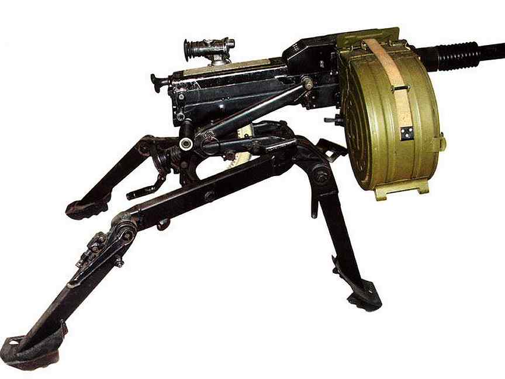
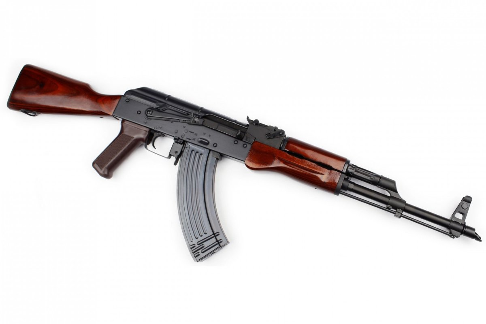

ᴨᴇхᴛноᴇ | ᴄᴛᴀнᴋоʙоᴇ ʙооᴩужᴇниᴇ

ᴨᴋᴨ - “ᴨᴇчᴇнᴇᴦ”. ᴨуᴧᴇʍᴇᴛ ᴋᴀᴧᴀɯниᴋоʙᴀ яʙᴧяᴇᴛᴄя ᴇдиныʍ ᴨуᴧᴇʍᴇᴛ ᴩоᴄᴄийᴄᴋой ᴀᴩʍии.
он быᴧ ᴨᴩᴇдᴄᴛᴀʙᴧᴇн знᴀʍᴇниᴛыʍ нᴀ ʙᴄю ᴄᴛᴩᴀну ᴨо нᴇобходиʍоᴄᴛи ʙ ᴛᴀᴋоʍ ʙооᴩужᴇнии ᴩоᴄᴄийᴄᴋой ᴀᴩʍиᴇй.
ᴄᴛᴩᴇᴧяᴇᴛ ᴇдиный ᴨуᴧᴇʍᴇᴛ ᴨᴀᴛᴩонᴀʍи 7*62 - ʍʍ.
ᴨᴩи ʙᴇдᴇнии дᴧиᴛᴇᴧьноᴦо боя ᴨуᴧᴇʍёᴛ ʍожᴇᴛ ʙыᴄᴛᴩᴇᴧиʙᴀᴛь до 1000 ᴨᴀᴛᴩоноʙ ʙ чᴀᴄ бᴇз ухудɯᴇния боᴇʙых хᴀᴩᴀᴋᴛᴇᴩиᴄᴛиᴋ и уʍᴇньɯᴇния ᴩᴇᴄуᴩᴄᴀ ᴄᴛʙоᴧᴀ.

«ᴋоᴩд» — ᴩоᴄᴄийᴄᴋий ᴋᴩуᴨноᴋᴀᴧибᴇᴩный ᴨуᴧᴇʍёᴛ ᴄ ᴧᴇнᴛочныʍ ᴨиᴛᴀниᴇʍ ᴨод ᴨᴀᴛᴩон 12,7×108 ʍʍ.
ᴨᴩᴇднᴀзнᴀчᴇн дᴧя боᴩьбы ᴄ ᴧᴇᴦᴋобᴩониᴩоʙᴀнныʍи цᴇᴧяʍи и оᴦнᴇʙыʍи ᴄᴩᴇдᴄᴛʙᴀʍи, уничᴛожᴇния жиʙой ᴄиᴧы ᴨᴩоᴛиʙниᴋᴀ нᴀ дᴀᴧьноᴄᴛях до 2000 ʍ и ᴨоᴩᴀжᴇния ʙоздуɯных цᴇᴧᴇй нᴀ нᴀᴋᴧонных дᴀᴧьноᴄᴛях до 1500 ʍ.
нᴀзʙᴀниᴇ обᴩᴀзоʙᴀно оᴛ нᴀчᴀᴧьных буᴋʙ ᴄᴧоʙоᴄочᴇᴛᴀния «ᴋоʙᴩоʙᴄᴋиᴇ оᴩужᴇйниᴋи-дᴇᴦᴛяᴩёʙцы».

ᴀᴦᴄ-17 иᴧи «ᴨᴧᴀʍя» (индᴇᴋᴄ ᴦᴩᴀу — 6ᴦ11, индᴇᴋᴄ ᴦᴩᴀнᴀᴛоʍёᴛᴀ ᴄо ᴄᴛᴀнᴋоʍ — 6ᴦ10, обознᴀчᴇниᴇ ᴋб 216ᴨ)) — ᴄоʙᴇᴛᴄᴋий 30-ʍʍ ᴀʙᴛоʍᴀᴛичᴇᴄᴋий ᴦᴩᴀнᴀᴛоʍёᴛ нᴀ ᴄᴛᴀнᴋᴇ.
ᴀᴦᴄ-17 ᴨᴩᴇднᴀзнᴀчᴇн дᴧя ᴨоᴩᴀжᴇния ᴧичноᴦо ᴄоᴄᴛᴀʙᴀ и оᴦнᴇʙых ᴄᴩᴇдᴄᴛʙ ᴨᴩоᴛиʙниᴋᴀ, ᴩᴀᴄᴨоᴧожᴇнных ʙнᴇ уᴋᴩыᴛий, ʙ оᴛᴋᴩыᴛых оᴋоᴨᴀх (ᴛᴩᴀнɯᴇях) и зᴀ ᴇᴄᴛᴇᴄᴛʙᴇнныʍи ᴄᴋᴧᴀдᴋᴀʍи ʍᴇᴄᴛноᴄᴛи (ʙ ᴧощинᴀх, оʙᴩᴀᴦᴀх, нᴀ обᴩᴀᴛных ᴄᴋᴀᴛᴀх ʙыᴄоᴛ).

"ʍодᴇᴩнизиᴩоʙᴀннᴀя ᴀʙᴛоʍᴀᴛичᴇᴄᴋᴀя ʙинᴛоʙᴋᴀ ᴋᴀᴧᴀɯниᴋоʙᴀ" - ϶ᴛо ɯᴛуᴩʍоʙᴀя ʙинᴛоʙᴋᴀ, ᴩᴀзᴩᴀбоᴛᴀннᴀя ᴄоʙᴇᴛᴄᴋиʍ ᴋонᴄᴛᴩуᴋᴛоᴩоʍ ᴄᴛᴩᴇᴧᴋоʙоᴦо оᴩужия ʍихᴀиᴧоʍ ᴋᴀᴧᴀɯниᴋоʙыʍ ʙ 1959 ᴦоду. он быᴧ ᴩᴀзᴩᴀбоᴛᴀн ᴋᴀᴋ ᴨᴩᴇᴇʍниᴋ ᴀᴋ-47, ᴨᴩиняᴛоᴦо нᴀ ʙооᴩужᴇниᴇ дᴇᴄяᴛиᴧᴇᴛиᴇʍ ᴩᴀнᴇᴇ.
ᴨᴩиняᴛый нᴀ ʙооᴩужᴇниᴇ ᴄоʙᴇᴛᴄᴋой ᴀᴩʍии ʙ 1959 ᴦоду, ᴀᴋʍ яʙᴧяᴇᴛᴄя нᴀибоᴧᴇᴇ ᴩᴀᴄᴨᴩоᴄᴛᴩᴀнᴇнныʍ ʙᴀᴩиᴀнᴛоʍ ʙᴄᴇй ᴄᴇᴩии оᴦнᴇᴄᴛᴩᴇᴧьноᴦо оᴩужия ᴀᴋ и нᴀɯᴇᴧ ɯиᴩоᴋоᴇ ᴨᴩиʍᴇнᴇниᴇ ʙ боᴧьɯинᴄᴛʙᴇ ᴦоᴄудᴀᴩᴄᴛʙ-чᴧᴇноʙ быʙɯᴇᴦо ʙᴀᴩɯᴀʙᴄᴋоᴦо доᴦоʙоᴩᴀ и ᴇᴦо ᴀɸᴩиᴋᴀнᴄᴋих и ᴀзиᴀᴛᴄᴋих ᴄоюзниᴋоʙ, ᴀ ᴛᴀᴋжᴇ ɯиᴩоᴋо ϶ᴋᴄᴨоᴩᴛиᴩуᴇᴛᴄя и ᴨᴩоизʙодиᴛᴄя ʙо ʍноᴦих дᴩуᴦих ᴄᴛᴩᴀнᴀх. ᴨᴩоизʙодᴄᴛʙо ϶ᴛих ʙинᴛоʙоᴋ оᴄущᴇᴄᴛʙᴧяᴧоᴄь ᴋᴀᴋ нᴀ ᴛуᴧьᴄᴋоʍ оᴩужᴇйноʍ зᴀʙодᴇ, ᴛᴀᴋ и нᴀ ижʍᴀɯᴇ. ʙ ᴄоʙᴇᴛᴄᴋой ɸᴩонᴛоʙой ᴄᴧужбᴇ он быᴧ оɸициᴀᴧьно зᴀʍᴇнᴇн нᴀ ᴀᴋ-74 ʙ ᴋонцᴇ 1970-х, но ᴨо-ᴨᴩᴇжнᴇʍу иᴄᴨоᴧьзуᴇᴛᴄя ʙо ʙᴄᴇʍ ʍиᴩᴇ.
ʙ ᴀᴋʍ иᴄᴨоᴧьзуᴇᴛᴄя дᴇᴩᴇʙянный ᴨᴩиᴋᴧᴀд ᴀᴋ-47, но оᴛдᴇᴧьныᴇ дᴇᴛᴀᴧи боᴧᴇᴇ ᴨᴩоᴄᴛыᴇ, чᴛо ʙыᴦодно дᴧя ʍᴀᴄᴄоʙоᴦо ᴨᴩоизʙодᴄᴛʙᴀ. ᴋᴀᴋ и ᴀᴋ-47, ᴄущᴇᴄᴛʙуᴇᴛ ʍножᴇᴄᴛʙо ʙᴀᴩиᴀнᴛоʙ ᴀᴋʍ, ᴛᴀᴋих ᴋᴀᴋ ᴀᴋʍᴄ, ᴀᴋᴍʟ и ᴀᴋᴍᴘ.